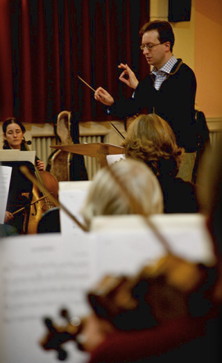

Next Performance
December Concert
- Handel
- Excerpts from the Messiah
- Beethoven
- Symphony No. 6
Our Society
December Concert
Founded in 1923, Haslemere Musical Society consists of a Symphony Orchestra and Chorus and has been a major contributor to the musical life of South West Surrey for nearly ninety years. Over this period the Society has built a reputation for its high musical standards and for producing exciting and enjoyable concerts.
